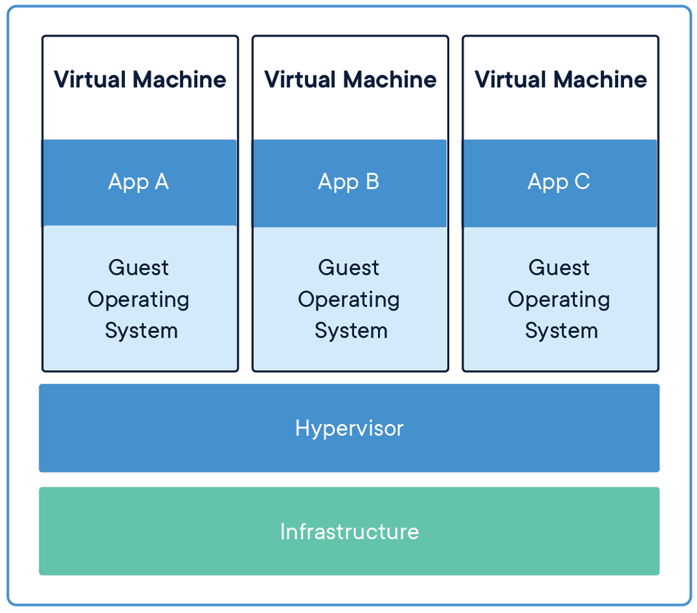

Docker for friends
Share knownledge of Docker and containers technology with friends.
Installation
Get Docker by following the instructions found here.
Overview
Docker is an open platform for developing, shipping, and running applications with containers.
What is a container?
Containers are an abstraction at the application layer that packages code and dependencies together.

Multiple containers can run on the same machine, called host, and share the OS kernel with other containers, each running as isolated processes in user space.
Fundamentally, a container is nothing but a running process, with some added encapsulation features applied to it in order to keep it isolated from the host and from other containers.
Difference to Virtual Machines
Virtual machines (VMs) are an abstraction of physical hardware turning one server into many servers. The hypervisor allows multiple VMs to run on a single machine.

Containers and virtual machines have similar resource isolation and allocation benefits, but function differently because containers virtualize the operating system instead of hardware. Containers are more portable and efficient because each VM includes a full copy of an operating system, the application, necessary binaries and libraries - taking up tens of GBs.
What is an image?
One of the most important aspects of container isolation is that each container interacts with its own private filesystem; this filesystem is provided by a Docker image.
An image is a read-only template with instructions for creating a Docker container and includes everything needed to run an application - the code or binary, runtimes, dependencies, and any other filesystem objects required. Often, an image is based on another image, and has additional customization. For example, you may build an image which is based on the ubuntu image, but installs the Apache web server and your application, as well as the configuration details needed to make your application run.
Take away
- Containers are running processes.
- Host is the machine where containers runs.
- Images provide the user space to containers.
Architecture
Docker uses a client-server architecture. The Docker client talks to the Docker daemon, which does the heavy lifting of building, running, and distributing your Docker containers.
Docker daemon
The Docker daemon (dockerd) listens for Docker API requests from client and manages Docker objects such as images, containers, networks, and volumes. A daemon can also communicate with other daemons to manage Docker services.
Docker client
The Docker client (docker) is the primary way that many Docker users interact with Docker. When you use commands such as docker run, the client sends these commands to dockerd, which carries them out.
The Docker client and daemon can run on the same system, or you can connect a Docker client to a remote Docker daemon. The Docker client and daemon communicate using a REST API, over UNIX sockets or a network interface. This make Docker client able communicate with more than one daemon.
Docker registries
A Docker registry stores Docker images. Docker Hub is a public registry that anyone can use, and Docker is configured to look for images on Docker Hub by default. You can even run your own private registry.
Diagram

Docker client
Let's see in practice what we have learned so far by familiarizing our selfs with the Docker client interface.
First of all, start your Docker daemon or else docker commands may result in following error:
Error response from daemon: dial unix docker.raw.sock: connect: connection refused
Containers
We learned that containers are running processes that Docker daemon (dockerd) manages. We can list the container with docker ps
Try it!
So, no container currently running. We will require an image to use in order to get a container running.
Images
In order to list all local images we can issue docker images.
Try it!
No images or nothing interesting, lets go to Docker hub to find an image. Found this hello-world image so let's use this to play around.
In order to make this image available to run we should instruct our Docker dameon to pull it with:
docker pull hello-world
Try it!
Which results in:
$ docker pull hello-world
Using default tag: latest
latest: Pulling from library/hello-world
0e03bdcc26d7: Pull complete
Digest: sha256:e7c70bb24b462baa86c102610182e3efcb12a04854e8c582838d92970a09f323
Status: Downloaded newer image for hello-world:latest
docker.io/library/hello-world:latest
Let's see what docker images will list now.
Try it!
$ docker images
REPOSITORY TAG IMAGE ID CREATED SIZE
hello-world latest bf756fb1ae65 11 months ago 13.3kB
Running my first container
In order to run our first container we should docker run {image} with the name of the image previously pulled from registyre, like:
docker run hello-world
Try it!
Now, let's see where our container with docker ps.
Try it!
Nothing to see, but why? There is nothing to see because the hello-world program done all his work and exited. We can list all exited containers with --all option, like:
docker ps --all
Try it!
This should result in:
CONTAINER ID IMAGE COMMAND CREATED STATUS PORTS NAMES
9410dfc4526a hello-world "/hello" 6 minutes ago Exited (0) 6 minutes ago romantic_kare
Before closing, what would you say to run something more ambitious like docker run -it ubuntu bash.
Try it!
In a nutshell:
- Docker client instruct Docker daemon to run a container with an image called
ubuntu. - Docker dameon will try to pull if he does not have the image available locally.
- The option
-itwill make it available to have an interactive pseudo-TTY with the container. - The
bashwould be the application that will be executed in the container and this would allow us to look around inside.
Build out first image
In this chapter, we will start building our first image and familisiarize. The completed example is accessible here
Dockerfile
A Dockerfile is a text document that contains all the commands a user could call on the command line to assemble an image. When we tell Docker to build our image by executing the docker build command, Docker reads these instructions and executes them one by one and creates a Docker image as a result.
The name of the Dockerfile is not important but the default filename for many commands is simply
Dockerfile. So, we’ll use that as our filename throughout this series.
Here is the format of the Dockerfile:
# Comment
INSTRUCTION arguments
The instruction is not case-sensitive. However, convention is for them to be UPPERCASE to distinguish them from arguments more easily.
Base image
Create a directory and create a file named Dockerfile and open this file in your text editor.
The first thing we need to do is to add a line in our Dockerfile that tells Docker what base image we would like to use for our application. Therefore, instead of creating our own base image, we’ll use the official ubuntu image.
FROM ubuntu
The above is equivalent to
FROM ubuntu:latest
Extending the base image ubuntu
Following we will, update the ubuntu package manager in order to install the ping command.
This is done with the RUN <command> syntact in the our Dockerfile.
RUN apt-get update
RUN apt-get install iputils-ping -y
Pay attention to the
-yparam. Usually, installing software using package manager will prompt user forY/nbut there is no interaction during build of image, so commands should skip the prompt.